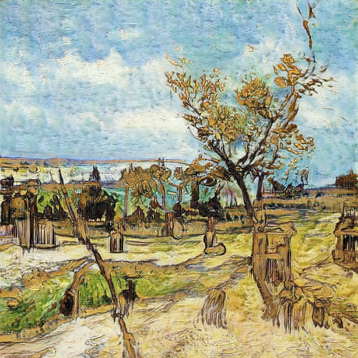

| e-mail: mattp@nyu.edu | Github |
I'm a Computer Science and Data Science student at the Courant Institute of Mathematical Sciences at NYU, graduating in Spring 2024. In my free time, I like to build tools to help automate my daily life.
|
A Python model that takes my portfolio holdings and scrapes websites for market data to create a PDF or HTML report every morning. Built with a custom API to authenticate and access Schwab holdings data as well as other data sources. |
|
A generative model using PyTorch and the StyleGAN library that generates Van Gogh style paintings after being trained on a dataset of about 15,000 paintings and specialized on the artist. An example generation is developed in the website or through the Colab. |

|
A personal project where I wired an Arduino microcontroller to a painting with electrical paint, programmed to connect to Wi-Fi and change light colors based on the part of the painting tapped through voltage sensing. |
Acknowledgements |